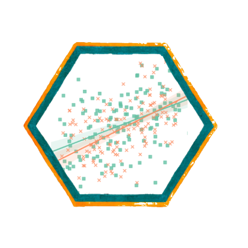
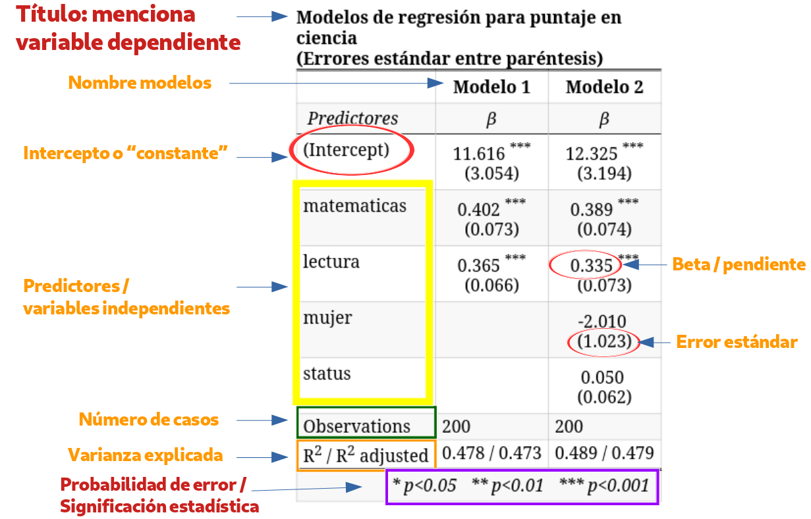
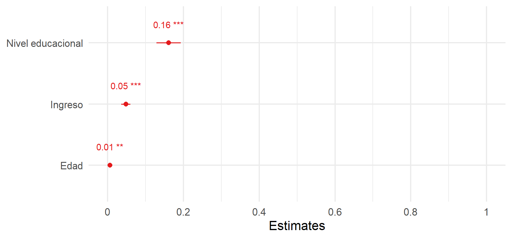

Métodos estadísticos para
Ciencias Sociales III
Kevin Carrasco
Sociología - UNAB
2do Sem 2026
https://metod3-unab.netlify.app/
Sesión 5
Repaso sesión anterior
Reporte de resultados
Estandarización de coeficientes
Síntesis del curso hasta aquí
¿Dónde quedamos?
La regresión múltiple incorpora varios predictores y parcializa cada uno respecto de los demás
Por eso los coeficientes cambian entre modelos: agregar ingreso redujo el coeficiente de educación, agregar edad lo aumentó, y la edad incluso invirtió su signo
Cada especificación responde a una pregunta distinta, y siempre debe explicitarse qué se está controlando
Inferencia
Nuestros datos son una muestra: la inferencia pregunta si lo observado permite afirmar algo sobre la población
La hipótesis nula sostiene que en la población \(\beta = 0\), es decir, que no hay asociación
El error estándar mide la imprecisión del coeficiente: aumenta con residuos grandes, disminuye con más casos
El estadístico \(t = \beta / se(\beta)\) compara el coeficiente con su propia imprecisión
Reglas de decisión
Para muestras grandes: \(t > 1{,}96\) permite rechazar \(H_0\) a un \(p<0{,}05\), y \(t > 2{,}58\) a un \(p<0{,}01\)
Equivalente: si el intervalo de confianza no contiene el cero, el coeficiente es significativo
En las tablas: * \(p<0{,}05\), ** \(p<0{,}01\), *** \(p<0{,}001\)
Dos advertencias que conviene tener presentes
El valor p no indica la magnitud ni la importancia del efecto
Con muestras grandes, coeficientes muy pequeños resultan significativos: significación estadística \(\neq\) relevancia
Hoy
Ya sabemos estimar e interpretar. Ahora: ¿cómo se comunican estos resultados?
Y una pregunta que quedó pendiente: si los predictores están en escalas distintas, ¿cuál pesa más?
Al final, una síntesis de todo lo visto en estas cinco sesiones
Reporte de resultados
Del output de R al reporte
La salida de
summary()sirve para trabajar, no para publicarUn artículo, una tesis o un informe presentan los resultados en una tabla de regresión
En R es posible automatizar ese reporte, pero se requieren especificaciones para lograr una presentación adecuada
En ocasiones se acompaña de la ecuación del modelo, aunque esto es opcional
Contenidos mínimos de una tabla
Los coeficientes de cada predictor
Una medida de precisión: error estándar o intervalo de confianza
Indicación de significación estadística (asteriscos o valores p)
El número de casos (N)
Medidas de ajuste: \(R^2\) y \(R^2\) ajustado
Nombres de variables legibles, no los códigos del cuestionario
Un ejemplo

Sentido de presentación de modelos
Se comienza ingresando las variables de la hipótesis principal
Los modelos siguientes incorporan hipótesis secundarias o variables de control
La interpretación de la tabla se realiza, en general, para cada variable independiente a través de los modelos, no modelo por modelo
El objetivo es que el lector vea qué le ocurre al coeficiente de interés a medida que se agregan controles
Nuestro ejemplo
| Modelo 1 | Modelo 2 | Modelo 3 | ||||
|---|---|---|---|---|---|---|
| Predictores | β | std. Error | β | std. Error | β | std. Error |
| (Intercepto) | 3.273 *** | 0.078 | 3.290 *** | 0.077 | 2.922 *** | 0.146 |
| Nivel educacional | 0.204 *** | 0.014 | 0.145 *** | 0.016 | 0.161 *** | 0.016 |
| Ingreso (cientos de miles) | 0.049 *** | 0.006 | 0.048 *** | 0.006 | ||
| Edad | 0.006 ** | 0.002 | ||||
| Observations | 2301 | 2301 | 2301 | |||
| R2 / R2 adjusted | 0.085 / 0.084 | 0.109 / 0.108 | 0.113 / 0.111 | |||
| * p<0.05 ** p<0.01 *** p<0.001 | ||||||
Opciones de tab_model
sjPlot::tab_model(list(e1, e2, e3),
show.se = TRUE, # mostrar errores estándar
show.ci = FALSE, # ocultar intervalos de confianza
digits = 3, # decimales
p.style = "stars", # significación con asteriscos
collapse.se = TRUE, # SE bajo el coeficiente
dv.labels = c("Modelo 1", "Modelo 2", "Modelo 3"),
pred.labels = c("(Intercepto)", "Nivel educacional",
"Ingreso", "Edad"),
string.pred = "Predictores",
string.est = "β",
title = "Modelos de regresión para estatus social subjetivo")Los argumentos dv.labels y pred.labels son los que transforman una salida técnica en una tabla presentable
Errores frecuentes al reportar
Dejar los códigos del cuestionario como nombres de variables (
m01,d01_01)Reportar demasiados decimales, o un número distinto en cada columna
Omitir el N, sobre todo cuando cambia entre modelos por casos perdidos
Interpretar el intercepto cuando el valor 0 no es plausible
Confundir la significación estadística con la magnitud del efecto
Alternativa: gráfico de coeficientes

Figure 1
Útil para presentaciones. No reemplaza a la tabla en un reporte escrito
Estandarización de coeficientes
El problema
Mirando la tabla anterior, ¿cuál de los tres predictores es más importante?
Nivel educacional: 0.161
Ingreso (cientos de miles): 0.048
Edad: 0.0063
¿Significa esto que la educación importa 25 veces más que la edad?
Los coeficientes están en escalas distintas y no son directamente comparables
Escalas distintas
| Variable | Unidad | DE |
|---|---|---|
| Estatus subjetivo | peldaño (0-10) | 1.53 |
| Nivel educacional | nivel (1-10) | 2.18 |
| Ingreso (cientos de miles) | cien mil pesos | 5.58 |
| Edad | año | 15.14 |
Un año más de edad es un cambio muy pequeño en su escala; un nivel educacional más es un cambio grande en la suya
Comparar 0,161 con 0,0063 es comparar cantidades medidas en unidades diferentes
La solución: una escala común
Para comparar la magnitud de un coeficiente respecto de los otros se requiere pasar a una escala común
Esto se efectúa mediante la estandarización
Cada valor se pondera respecto de la desviación estándar de su propia variable
El puntaje Z
A cada valor se le resta el promedio y se divide por la desviación estándar:
\[z_x=\frac{x-\bar{x}}{sd(x)}\]
El resultado tiene media 0 y desviación estándar 1
El procedimiento se aplica tanto a la dependiente como a las independientes
Un valor de \(z = 1\) significa “una desviación estándar por sobre el promedio”
Estandarización en R
Comparación de modelos
| No estandarizado | Estandarizado | |||
|---|---|---|---|---|
| Predictores | β | std. Error | β | std. Error |
| (Intercepto) | 2.922 *** | 0.146 | 0.000 | 0.020 |
| Nivel educacional | 0.161 *** | 0.016 | 0.230 *** | 0.024 |
| Ingreso | 0.048 *** | 0.006 | 0.176 *** | 0.022 |
| Edad | 0.006 ** | 0.002 | 0.062 ** | 0.021 |
| Observations | 2301 | 2301 | ||
| R2 / R2 adjusted | 0.113 / 0.111 | 0.113 / 0.111 | ||
| * p<0.05 ** p<0.01 *** p<0.001 | ||||
Interpretación
Al estandarizar, los coeficientes reflejan cuántas desviaciones estándar cambia \(Y\) ante el cambio de una desviación estándar en \(X\)
Nivel educacional (0.23): por cada desviación estándar adicional de educación, el estatus subjetivo aumenta 0.23 desviaciones estándar
Ahora sí son comparables: educación (0.23) e ingreso (0.176) tienen pesos similares, y ambos claramente mayores que edad (0.062)
Lo que revela la estandarización
En la escala original, el coeficiente del ingreso (0.048) parecía casi despreciable frente al de educación (0.161)
Estandarizados, 0.176 frente a 0.23: el ingreso pesa casi tanto como la educación
¿Qué NO cambia al estandarizar?
El \(R^2\) es idéntico: estandarizar no altera el poder explicativo, solo la escala de los coeficientes
Los valores \(t\) y los niveles de significación tampoco cambian
El intercepto pasa a ser 0, y deja de tener interpretación sustantiva
Ventajas
Comparabilidad entre predictores: permite identificar cuáles tienen mayor peso relativo
Neutraliza escalas distintas, lo que resulta útil al combinar variables con unidades muy diferentes
Facilita la interpretación en términos relativos
Desventajas
Pérdida de interpretación sustantiva: ya no se puede decir “un año más de edad implica tantos puntos”
El intercepto deja de ser informativo
En variables dicotómicas, la interpretación en desviaciones estándar es poco intuitiva
Dificulta la comunicación a audiencias no especializadas
Los coeficientes dependen de la variabilidad de esta muestra, por lo que no son comparables entre estudios con muestras distintas
En la práctica
Se reportan los coeficientes no estandarizados como resultado principal
Y los estandarizados cuando la pregunta es explícitamente sobre importancia relativa
Un segundo ejemplo
La pregunta
La sociología de la salud estudia los determinantes sociales del bienestar: la idea de que la posición que se ocupa en la estructura social se asocia a diferencias sistemáticas en indicadores de salud
La hipótesis clásica es la del gradiente social: a mayor posición socioeconómica, mejores indicadores de bienestar
¿Se observa ese gradiente en ELSOC?
La variable dependiente
ELSOC incluye una escala de nueve ítems sobre la frecuencia de distintos estados anímicos durante las últimas dos semanas
Cada ítem se responde en una escala de frecuencia, aquí recodificada de 0 a 4
La suma de los nueve ítems entrega un puntaje de 0 a 36: a mayor valor, mayor frecuencia de estados anímicos negativos
La construcción y validación de escalas de este tipo es materia de la última unidad del curso; por ahora la usamos como una variable ya construida
Los datos
2285 casos con información completa
animo <- elsoc_long_2016_2022.2 %>%
filter(ola == 1) %>%
select(all_of(items), m01, m29, m0_edad) %>%
set_na(., na = c(-999, -888, -777, -666)) %>%
na.omit() %>%
rename("educacion" = m01, "ingreso" = m29, "edad" = m0_edad) %>%
filter(ingreso >= 50000, ingreso <= 5000000) %>%
mutate(across(all_of(items), ~ .x - 1),
ing100 = ingreso / 100000,
sintomas = rowSums(across(all_of(items))))Descriptivos
| Variable | Media | DE | Min | Max |
|---|---|---|---|---|
| Escala anímica (0-36) | 6.12 | 5.78 | 0.0 | 36 |
| Nivel educacional (1-10) | 5.16 | 2.18 | 1.0 | 10 |
| Ingreso (cientos de miles) | 5.88 | 5.58 | 0.5 | 50 |
| Edad | 46.03 | 15.17 | 18.0 | 88 |
Note el contraste de escalas: la dependiente recorre 37 valores posibles, la educación 10, y la edad más de 70
Correlaciones
| sintomas | educacion | ing100 | edad | |
|---|---|---|---|---|
| sintomas | 1.000 | -0.141 | -0.131 | 0.027 |
| educacion | -0.141 | 1.000 | 0.469 | -0.353 |
| ing100 | -0.131 | 0.469 | 1.000 | -0.160 |
| edad | 0.027 | -0.353 | -0.160 | 1.000 |
Educación e ingreso se asocian negativamente con la escala, en la dirección que predice la hipótesis del gradiente social
El modelo
| Escala anímica | ||
|---|---|---|
| Predictores | β | std. Error |
| (Intercepto) | 8.581 *** | 0.582 |
| Nivel educacional | -0.294 *** | 0.066 |
| Ingreso (cientos de miles) | -0.086 *** | 0.024 |
| Edad | -0.010 | 0.008 |
| Observations | 2285 | |
| R2 / R2 adjusted | 0.026 / 0.024 | |
| * p<0.05 ** p<0.01 *** p<0.001 | ||
Interpretación
Educación (-0.294): por cada nivel educacional adicional, el puntaje en la escala disminuye 0.294 puntos, a igual ingreso y edad
Ingreso (-0.086): por cada cien mil pesos adicionales, el puntaje disminuye 0.086 puntos, a igual educación y edad
Ambos coeficientes son negativos y significativos: el gradiente social se observa
Un coeficiente no significativo
El coeficiente de la edad es -0.0096, con un valor p de 0.252
Al no alcanzar el umbral convencional, no podemos rechazar la hipótesis nula
Lectura correcta: los datos no permiten afirmar que exista asociación entre edad y esta escala, una vez controlados educación e ingreso
Lectura incorrecta: “se demostró que la edad no tiene efecto”. No rechazar \(H_0\) no equivale a probar que \(H_0\) sea verdadera
¿Cuál pesa más?
En la escala original, la educación (-0.294) parece tener un efecto más de tres veces mayor que el ingreso (-0.086). Estandaricemos:
| No estandarizado | Estandarizado | |||
|---|---|---|---|---|
| Predictores | β | std. Error | β | std. Error |
| (Intercepto) | 8.581 *** | 0.582 | -0.000 | 0.021 |
| Nivel educacional | -0.294 *** | 0.066 | -0.111 *** | 0.025 |
| Ingreso | -0.086 *** | 0.024 | -0.083 *** | 0.023 |
| Edad | -0.010 | 0.008 | -0.025 | 0.022 |
| Observations | 2285 | 2285 | ||
| R2 / R2 adjusted | 0.026 / 0.024 | 0.026 / 0.024 | ||
| * p<0.05 ** p<0.01 *** p<0.001 | ||||
La conclusión cambia
Estandarizados: educación -0.111, ingreso -0.083
La distancia entre ambos se reduce considerablemente
La impresión de que la educación importaba mucho más que el ingreso era, en buena medida, un efecto de las unidades de medida
Igual que en el ejemplo anterior: los coeficientes en escala original no sirven para comparar importancia relativa
Cómo se reporta
Se estimó un modelo de regresión lineal sobre una escala sumativa de estados anímicos (rango 0-36), con datos de la primera ola de ELSOC (2016; N = 2285). Tanto el nivel educacional (β = -0.294) como el ingreso del hogar (β = -0.086) presentan asociaciones negativas y estadísticamente significativas, consistentes con la hipótesis del gradiente social. La edad no alcanza significación estadística (p = 0.252) una vez controladas las restantes variables. Los coeficientes estandarizados (-0.111 y -0.083, respectivamente) indican pesos relativos similares para ambos predictores, pese a que sus coeficientes en escala original difieren en un factor cercano a tres. El modelo explica un 2.6% de la varianza.
Lo que enseña este ejemplo
Un predictor puede resultar no significativo, y eso también es un resultado que se reporta e interpreta
La comparación de magnitudes en escala original puede ser francamente engañosa
La estandarización responde a una pregunta específica, la de la importancia relativa, y no a la de significación ni a la de ajuste
Síntesis de las cinco sesiones
El recorrido
Sesión 1: qué es investigar cuantitativamente, cómo se organizan los datos, escalas de medición, correlación
Sesión 2: de las medias condicionales a la recta, estimación de \(b_0\) y \(b_1\) por mínimos cuadrados
Sesión 3: bondad de ajuste (\(R^2\)) e inferencia
Sesión 4: regresión múltiple, parcialización y control estadístico
Sesión 5: reporte de resultados y estandarización
Objetivos centrales del modelo de regresión
Conocer: la variación de la variable dependiente de acuerdo a la variación de otra(s) variable(s) independiente(s)
Predecir: estimar el valor de una variable (dependiente) de acuerdo al valor de otra(s)
Inferir: establecer en qué medida esta asociación es estadísticamente significativa
El modelo, en una línea
\[\widehat{Y}=b_{0} + b_{1}X_{1} + b_{2}X_{2} + \dots + b_{k}X_{k}\]
\(\widehat{Y}\): valor predicho de la variable dependiente
\(b_0\): valor esperado de \(Y\) cuando todas las independientes valen 0
\(b_j\): cambio esperado en \(Y\) por cada unidad de \(X_j\), manteniendo constantes las demás
\(e_i = Y_i - \widehat{Y}_i\): residuo, lo que el modelo no logra explicar
Glosario I: estimación
| Concepto | Qué es | Cómo se dice |
|---|---|---|
| Intercepto | Valor de \(Y\) cuando \(X = 0\) | “Cuando el predictor vale cero, el valor esperado es…” |
| Coeficiente | Cambio en \(Y\) por unidad de \(X\) | “Por cada unidad adicional de X, Y cambia en…” |
| Valor predicho | Estimación de \(Y\) para un caso | “El modelo predice un valor de…” |
| Residuo | Observado menos predicho | “Esta persona está por sobre lo que predice el modelo” |
| Mínimos cuadrados | Criterio que minimiza \(\sum e_i^2\) | “La recta que minimiza los errores al cuadrado” |
| Media condicional | Promedio de \(Y\) para un valor de \(X\) | “El promedio de Y entre quienes tienen X = 5” |
Glosario II: ajuste
| Concepto | Qué es | Cómo se dice |
|---|---|---|
| \(SS_{tot}\) | Variación total de \(Y\) | Suma de cuadrados totales |
| \(SS_{reg}\) | Variación asociada al modelo | Suma de cuadrados de regresión |
| \(SS_{error}\) | Variación no explicada | Suma de cuadrados del error |
| \(R^2\) | \(SS_{reg}/SS_{tot}\) | “El modelo explica un X% de la varianza” |
| \(R^2\) ajustado | \(R^2\) penalizado por número de predictores | Se usa para comparar modelos |
Glosario III: inferencia
| Concepto | Qué es | Cómo se dice |
|---|---|---|
| Error estándar | Imprecisión del coeficiente | “El coeficiente se estima con un error de…” |
| Hipótesis nula | \(\beta = 0\) en la población | “No hay asociación en la población” |
| Estadístico \(t\) | Coeficiente dividido por su error estándar | Se compara con el valor crítico |
| Valor crítico | Umbral de la distribución \(t\) | 1,96 al 95%; 2,58 al 99% |
| Valor p | Probabilidad del resultado bajo \(H_0\) | “Significativo al 95% de confianza” |
| Intervalo de confianza | Rango plausible del parámetro | “Si no contiene el cero, es significativo” |
Glosario IV: regresión múltiple
| Concepto | Qué es | Cómo se dice |
|---|---|---|
| Parcialización | Extraer de un predictor lo que comparte con otros | “Una vez descontado lo que comparte con…” |
| Control estadístico | Comparar casos equivalentes en las demás variables | “Manteniendo constantes las demás variables” |
| Modelos anidados | Cada modelo contiene los predictores del anterior | “Al incorporar el segundo predictor…” |
| Variable omitida | Predictor relevante ausente del modelo | El coeficiente estimado absorbe su efecto |
| Colinealidad | Predictores muy correlacionados entre sí | Aumenta los errores estándar |
| Coeficiente estandarizado | Cambio en DE de \(Y\) por una DE de \(X\) | Permite comparar importancia relativa |
Cómo leer una tabla de regresión
Identificar la variable dependiente y las unidades en que está medida
Revisar qué predictores entran en cada modelo
Leer el coeficiente de interés: signo, magnitud y significación
Seguir ese coeficiente a través de los modelos y explicar sus cambios
Revisar el \(R^2\) y el N
Traducir el resultado a lenguaje sustantivo
Cinco frases que evitar
“La educación causa un aumento del estatus” (asociación, no causalidad)
“El efecto es muy significativo” (o es significativo o no lo es)
“El \(R^2\) es bajo, por lo tanto el modelo está mal”
“El coeficiente de educación es mayor que el de edad, por lo que importa más” (escalas distintas)
“La edad no tiene efecto” cuando el resultado es no significativo
Para la prueba
Se evalúa interpretación, no cálculo computacional.
deberán estimar un coeficiente de regresión e interpretarlo.
Habrá tablas de regresión que deberán leer, interpretar y comentar.
Conviene poder explicar, en lenguaje propio, qué significa cada columna de una tabla.
Y poder justificar por qué un coeficiente cambia entre dos modelos.
Para la próxima sesión
Prueba 1: lunes 7 de septiembre a las 15:00
Contenidos: sesiones 1 a 5, es decir, regresión simple y múltiple, estimación e interpretación de coeficientes, bondad de ajuste e inferencia
Métodos estadísticos para Ciencias Sociales III
Kevin Carrasco
Sociología - UNAB
2do Sem 2026
https://metod3-unab.netlify.app/